Capítulo 2 Estimación no-paramétrica de densidades
2.1 Histograma
El histograma es una de las estructuras básicas en estadística y es una herramienta descriptiva que permite visualizar la distribución de los datos sin tener conocimiento previo de los mismos. En esta sección definiremos el histograma más como un estadístico que como una herramienta de visualización de datos.
2.1.1 Construcción Estadística
Suponga que \(X_1,X_2, \dots ,X_n\) es una muestra independiente que proviene de una distribución desconocida \(f\). En este caso no asumiremos que \(f\) tenga alguna forma particular, que permita definirla de manera paramétrica como en el curso anterior.
Construcción:
Seleccione un origen \(x_0\) y divida la linea real en segmentos. \[\begin{equation*} B_j = [x_0 +(j - 1)h,x_0 + jh), \quad j\in \mathbb{Z} \end{equation*}\]
Cuente cuántas observaciones caen en el segmento \(B_j\). Denótelo como \(n_j\).
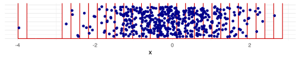 - Divida el número de observaciones en \(B_j\) por el tamaño de muestra \(n\) y el ancho de banda \(h\) de cada caja. \[\begin{equation*} f_j = \frac{n_j}{nh} \end{equation*}\] De esta forma si se suma las áreas definidas por el histograma da un total de 1.
Cuente la frecuencia por el tamaño de muestra \(n\) y el ancho de banda \(h\). \[\begin{equation*} f_j = \frac{n_j}{nh} \end{equation*}\]
Dibuje el histograma.
Formalmente el histograma es el
\[\begin{equation*} \hat{f}_h(x) = \frac{1}{nh} \sum_{i = 1}^{n} \sum_{j} I(X_i\in B_j) I(x\in B_j), \end{equation*}\]
donde \(I\) es la indicadora.
2.1.2 Construcción probabilística
Denote \(m_j=jh-h/2\) el centro del segmento,
\[\begin{align*} \mathbb{P}\left(X\in \left[m_j - \frac{h}{2},m_j + \frac{h}{2} \right)\right) & = \int_{m_j - \frac{h}{2}}^{m_j + \frac{h}{2}} f(u)du \\ & \approx f(m_j)h \end{align*}\]
Otra forma de aproximarlo es:
\[\begin{equation*} \mathbb{P} \left(X\in \left[m_j - \frac{h}{2},m_j + \frac{h}{2}\right) \right) \approx \frac{1}{n} \# \left\{X\in \left[m_j - \frac{h}{2},m_j + \frac{h}{2}\right) \right\} \end{equation*}\]
Acomodando un poco la expresión
\[\begin{equation*} \hat{f}_h(m_j) = \frac{1}{nh} \# \left\{X\in \left[m_j - \frac{h}{2},m_j + \frac{h}{2}\right) \right\} \end{equation*}\]
2.1.3 Propiedades estadísticas
Note que el estimador de histograma \(\hat f_h\) tiende a ser más suave conforme aumenta el ancho de banda \(h\).
2.1.4 Propiedades estadísticas
Suponga que \(x_0 = 0\) y que \(x \in B_j\) es un punto fijo, entonces el estimador evaluado en \(x\) es:
\[\begin{equation*} \hat{f}_h(x) = \frac{1}{nh} \sum_{i = 1}^{n} I(X_i \in B_j) \end{equation*}\]
2.1.5 Sesgo
Para calcular el sesgo primero calculamos:
\[\begin{align*} \mathbb{E}\left[ \hat{f}_h(x)\right] & = \frac{1}{nh} \sum_{i = 1}^{n} \mathbb{E}\left[ I(X_i \in B_j)\right] \\ & = \frac{1}{nh} n \mathbb{E}\left[ I(X_i \in B_j)\right] \end{align*}\]
donde \(I(X_i \in B_j)\) es una variable Bernoulli con valor esperado:
\[\begin{align*} \mathbb{E}\left[ I(X_i \in B_j)\right] = \mathbb{P}\left(I(X_i \in B_j)=1\right) = \int_{(j - 1)h}^{jh} f(u)du. \end{align*}\]
Entonces, \[\begin{align*} \mathbb{E}\left[{f}_h(x)\right] & = \frac{1}{h} \int_{(j - 1)h}^{jh} f(u)du \end{align*}\]
y por lo tanto el sesgo de \(\hat f_h(x)\) es: \[\begin{equation*} Sesgo(\hat{f}_h(x)) = \frac{1}{h} \int_{(j - 1)h}^{jh} f(u)du - f(x) \end{equation*}\]
Esto se puede aproximar usando Taylor alrededor del centro \(m_j = jh - h/2\) de \(B_j\) de modo que \(f(u) - f(x) \approx f^{\prime}(m_j)(u - x)\).
\[\begin{equation*} Sesgo(\hat{f}_h(x)) = \frac{1}{h} \int_{(j - 1)h}^{jh} [f(u) - f(x)] du \approx f^\prime(m_j)(m_j - x) \end{equation*}\] Entonces se puede concluir que:
- \(\hat f_h(x)\) es un estimador sesgado de \(f(x)\).
- El sesgo tiende a ser cero cerca del punto medio de \(B_j\).
- El sesgo es creciente con respecto a la pendiente de la verdadera densidad evaluada en el punto medio \(m_j\).
2.1.6 Varianza
Dado que todos los \(X_i\) son i.i.d., entonces
\[\begin{align*} \mathrm{Var}\left( \hat{f}_h(x)\right) & = \mathrm{Var}\left( \frac{1}{nh} \sum_{i = 1}^{n} I(X_i \in B_j)\right) \\ & = \frac{1}{n^2h^2} n\mathrm{Var}\left( I(X_i \in B_j)\right) \end{align*}\]
La variable \(I\) es una bernoulli con parametro \(\int_{(j - 1)h}^{h} f(u)du\) por lo tanto su varianza es el
\[\begin{equation*} \mathrm{Var}\left( \hat{f}_h(x)\right)\, = \frac{1}{nh^2} \left(\int_{(j - 1)h}^{h} f(u)du \right)\left( 1 -\int_{(j - 1)h}^{h} f(u)du \right) \end{equation*}\]
Ejercicio 2.1 Usando un desarrollo de Taylor como en la parte anterior, pruebe que: \[\begin{equation*} \mathrm{Var}\left( \hat{f}_h(x)\right)\approx \frac{1}{nh} f(x) \end{equation*}\]
Consecuencias:
- La varianza del estimador es proporcional a \(f(x)\).
- La varianza decrece si el ancho de banda \(h\) crece.
2.1.7 Error cuadrático medio
El error cuadrático medio del histograma es el
\[\begin{equation*} \mathrm{MSE}\left( \hat{f}_h(x)\right) = \mathrm{E}\left[\left(\hat{f}_h(x) - f(x)\right)^2\right] = \mathrm{Sesgo}^2\left( \hat{f}_h(x)\right) + \mathrm{Var}\left( \hat{f}_h(x)\right). \end{equation*}\]
Ejercicio 2.2 ¿Pueden probar la segunda igualdad de la expresión anterior?
Retomando los términos anteriores se puede comprobar que:
\[\begin{align} \mathrm{MSE}\left( \hat{f}_h(x)\right) = \frac{1}{nh} f(x) + f^\prime \left\{ \left( j - \frac{1}{2} \right) h \right\}^2 \left\{ \left( j - \frac{1}{2} \right) h - x \right\}^2 \\ + o\left(h \right) + o\left(\frac{1}{nh} \right) \tag{2.1} \end{align}\]
Nota:. Si \(h \to 0\) y \(nh \to \infty\) entonces \(\mathrm{MSE}\left( \hat{f}_h(x)\right) \to 0\). Es decir, conforme usamos más observaciones, pero el ancho de banda de banda no decrece tan rápido, entonces el error cuadrático medio converge a 0.
Como \(\mathrm{MSE}\left( \hat{f}_h(x)\right) \to 0\) (convergencia en \(\mathbb{L}^2\)) implica que \(\hat{f}_h(x) \stackrel{\mathcal{P}}{\to} f(x)\), entonces \(\hat{f}_h\) es consistente. Además según la fórmula (2.1), concluimos lo siguiente:
- Si \(h\to 0\), la varianza crece (converge a \(\infty\)) y el sesgo decrece (converge a \(f^\prime (0)x^2\)).
- Si \(h\to \infty\), la varianza decrece (hacia 0) y el sesgo crece (hacia \(\infty\))
Ejercicio 2.3 Si \(f\sim N(0,1)\), aproxime los componentes de sesgo, varianza y MSE, y grafíquelos para distintos valores de \(h\).
Solución:
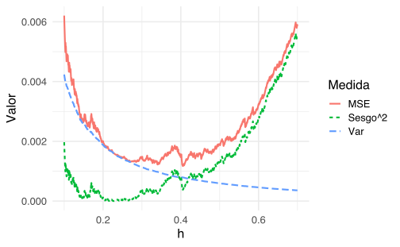
2.1.8 Error cuadrático medio integrado
Uno de los problemas con el \(\mathrm{MSE}\left( \hat{f}_h(x)\right)\) es que depende de \(x\) y de la función de densidad \(f\) (desconocida). Integrando con respecto a \(x\) el MSE se logra resolver el primer problema:
\[\begin{align*} \mathrm{MISE}\left( \hat{f}_h\right) & = \mathrm{E}\left[ \int_{ -\infty}^{\infty} \left\{ \hat{f}_h(x) - f(x) \right\}^2 dx \right] \\ & = \int_{ -\infty}^{\infty} \mathrm{E}\left[ \left\{ \hat{f}_h(x) - f(x) \right\}^2 \right] dx \\ & = \int_{ -\infty}^{\infty}\mathrm{MSE}(\hat{f}_h(x)) \, dx \end{align*}\]
Al \(\mathrm{MISE}\) se le llama error cuadrático medio integrado. Además,
\[\begin{align*} \mathrm{MISE} (\hat{f}_h) & \approx \int_{ -\infty}^{\infty} \frac{1}{nh} f(x)dx \\ & + \int_{ -\infty}^{\infty}\, \sum_{j}^{} I(x\in B_j) \left\{ \left( j- \frac{1}{2} \right)h -x \right\}^2 \left [f^\prime \left( \left\{j - \frac{1}{2}\right\}h \right) \right]^2 dx \\ & = \frac{1}{nh} + \sum_{j}^{} \left [f^\prime \left( \left\{j - \frac{1}{2}\right\}h \right) \right]^2 \int_{ B_j} \left\{ \left( j- \frac{1}{2} \right)h -x \right\}^2 dx \\ & =\frac{1}{nh} + \frac{h^2}{12} \sum_{j} \left [f^\prime \left( \left\{j - \frac{1}{2}\right\}h \right) \right]^2 \\ & \approx \frac{1}{nh} + \frac{h^2}{12} \int \{f^\prime(x)\}^2 dx \\ & =\frac{1}{nh} + \frac{h^2}{12} \Vert f^\prime\Vert_{2}^2 \end{align*}\]
la cual es una buena aproximación si \(h\rightarrow 0\). A este último término se le llama MISE asintótico.
2.1.9 Ancho de banda óptimo para el histograma
El MISE tiene un comportamiento asintótico similar al observado en el MSE. La figura siguiente presenta el comportamiento de la varianza, sesgo y MISE para nuestro ejemplo anterior:
Un problema frecuente en los histogramas es que la mala elección del parámetro \(h\) causa que estos no capturen toda la estructura de los datos. Por ejemplo, en el siguiente caso se muestra histogramas construídos a partir de 1000 números aleatorios según una \(N(0,1)\), bajo 4 distintas escogencias de ancho de banda.
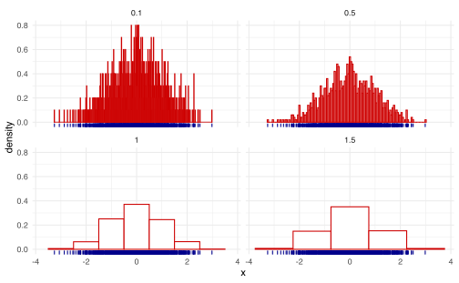
Un criterio más preciso para seleccionar el ancho de banda es a través de la minimización del MISE:
\[\begin{equation*} \frac{\partial \mathrm{MISE}(f_{h})}{\partial h} = -\frac{1}{nh^2} + \frac{1}{6} h \Vert f^\prime\Vert_{2}^2 = 0 \end{equation*}\]
lo implica que
\[\begin{equation*} h_{opt} = \left(\frac{6}{n\Vert f^\prime\Vert_{2}^2}\right) ^{1/3} = O\left( n^{-1/3} \right). \end{equation*}\]
y por lo tanto
\[\begin{equation*} \mathrm{MISE}(\hat{f}_{h}) = \frac{1}{n} \left(\frac{n\Vert f^\prime\Vert_{2}^2}{6}\right) ^{1/3} \end{equation*}\]
Nota: (Recuerde de Estadística I). Si \(X_1, \ldots, X_n \sim f_{\theta}\) i.i.d, con \(\mathrm{Var}(X) = \sigma^2\) y media \(\theta\), recuerde que el estimador \(\hat{\theta}\) de \(\theta\) tiene la característica que
\[\begin{equation*} \mathrm{MSE}(\theta) = \mathrm{Var}(\hat{\theta}) + \mathrm{Sesgo}^2(\hat{\theta}) = \frac{\sigma^2}{n} \end{equation*}\]
Según la nota anterior la tasas de convergencia del histograma es más lenta que la de un estimador parámetrico considerando la misma cantidad de datos, tal y como se ilustra en el siguiente gráfico:
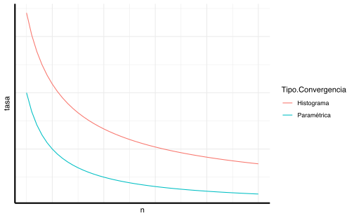
Finalmente, podemos encontrar el valor óptimo del ancho de banda (\(h=\) 0.2805) del conjunto de datos en el ejemplo anterior.
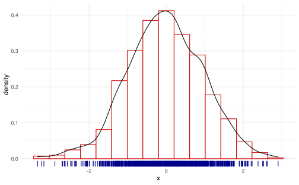
Ejercicio 2.4 Verifique que en el caso normal estándar: \(h_{opt}\approx 3.5 n^{-1/3}\).
2.2 Estimación de densidades basada en kernels.
2.2.1 Primera construcción
Sea \(X_{1},\ldots,X_{n}\) variables aleatorias i.i.d. con distribución \(f\) en \(\mathbb{R}\). La distribución de \(f\) es \(F(x)=\int_{-\infty}^{x}f(t)dt\).
La distribución empírica de \(F\) es: \[ F_{n}(x)=\frac{1}{n}\sum_{i=1}^{n}I(X_{i}\leq x). \]
Por la ley de los grandes números tenemos que \(F_{n}(x) \xrightarrow{c.s} F(x)\) para todo \(x\) en \(\mathbb{R}\), conforme \(n\rightarrow\infty\). Entonces, \(F_{n}(x)\) es un estimador consistente de \(F(x)\) para todo \(x\) in \(\mathbb{R}\).
Nota:. ¿Podríamos derivar \(F_n\) para encontrar el estimador \(\hat{f}_n\)?
La respuesta es si (más o menos).
Suponga que \(h>0\) tenemos la aproximación \[ f(x)\approx\frac{F(x+h)-F(x-h)}{2h}. \]
Remplazando \(F\) por su estimador \(F_{n}\), defina \[ \hat{f}_{n}^{R}(x)=\frac{F_{n}(x+h)-F_{n}(x-h)}{2h}, \] donde \(\hat{f}_{n}^{R}(x)\) es el estimador de Rosenblatt .
Podemos rescribirlo de la forma, \[ \hat{f}_{n}^{R}(x)=\frac{1}{2nh}\sum_{i=1}^{n}I(x-h<X_{i}\leq x+h)=\frac{1}{nh}\sum_{i=1}^{n}K_{0}\left(\frac{X_{i}-x}{h}\right) \] con \(K_{0}(u)=\frac{1}{2}I(-1<u\leq1)\), lo cual es equivalente al caso del histograma.
2.2.2 Otra construcción
Con el histograma construimos una serie de segmentos fijo \(B_{j}\) y contabamos el número de datos que estaban contenidos en \(B_{j}\)
Nota:. ¿Qué pasaría si cambiamos la palabra contenidos por alrededor de “x”?
Suponga que se tienen intervalos de longitud \(2h\), es decir, intervalos de la forma \([x-h,x+h)\).
El estimador de histograma se escribe como
\[\begin{equation*} \hat{f_{h}}(x) = \dfrac{1}{2hn} \# \{ X_i \in [x-h,x+h) \}. \end{equation*}\]
Note que si definimos \[\begin{equation*} K(u)=\frac{1}{2} I \left( \left\vert u \right\vert \leq 1 \right) \end{equation*}\] con \(u = \frac{x-x_i}{h}\), entonces parte del estimador de histograma se puede escribir como: \[\begin{equation*} \frac{1}{2}\# \{ X_i \in [x-h,x+h) \} =\sum_{i=1}^{n} K\left( \frac{x-x_{i}}{h} \right) =\sum_{i=1}^{n} \frac{1}{2} I \left( \left\vert \frac{x-x_{i}}{h} \right\vert \leq 1 \right) \end{equation*}\]
Finalmente se tendría que
\[\begin{equation*} \hat{f}_{h}\left( x \right) = \frac{1}{nh}\sum_{i=1}^{n} K\left( \frac{x-x_{i}}{h} \right) \end{equation*}\]
Nota:. ¿Qué pasaría si cambiaríamos la función \(K\) del histograma por una más general? Esto permitiría incluir la noción de “cercanía” de cada dato alrededor de \(x\).
Esta función debería cumplir las siguientes características:
- \(K(u)\geq 0\).
- \(\int_{-\infty}^{\infty} K(u)du = 1\).
- \(\int_{-\infty}^{\infty} u K(u)du = 0\).
- \(\int_{-\infty}^{\infty} u^{2} K(u)du <\infty\).
Por ejemplo:
- Uniforme: \(\frac{1}{2} I \left( \left\vert u \right\vert \leq 1 \right)\).
- Triangular: \((1-|u|) I \left( \left\vert u \right\vert \leq 1 \right)\).
- Epanechnikov: \(\frac{3}{4} (1-u^{2}) I \left( \left\vert u \right\vert \leq 1 \right)\).
- Gaussian: \(\frac{1}{\sqrt{2\pi}} \exp \left( -\frac{1}{2}u^{2} \right)\).

Entonces se tendría que la expresión general para un estimador por núcleos (kernel) de \(f\):
\[\begin{equation*} \hat{f}_{h}\left( x \right) = \frac{1}{nh}\sum_{i=1}^{n} K\left( \frac{x-x_{i}}{h} \right)=\frac{1}{n}\sum_{i=1}^{n} K_h(x-x_{i}) \end{equation*}\]
donde \(x_1,\ldots,x_n\) es una muestra i.i.d. de \(f\), \[\begin{align*} K_h(\cdot)=\frac 1 h K(\cdot /h). \end{align*}\] y \(K\) es un kernel según las 4 propiedades anteriores.
Nota:. ¿Qué pasaría si modificamos el ancho de banda \(h\) para un mismo kernel?
Nuevamente controlaríamos la suavidad del estimador a como se ilustra a continuación:
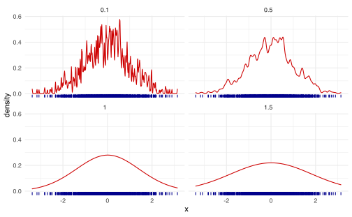
Inconveniente: no tenemos aún un criterio para un \(h\) óptimo.
Nota:. ¿Qué pasaría si modificamos el kernel para un mismo ancho de banda \(h\)?
Usando 1000 números aleatorios según una normal estándar, con un ancho de banda fijo (\(h=0.3\)) podemos ver que no hay diferencias muy marcadas entre los estimadores por kernel: 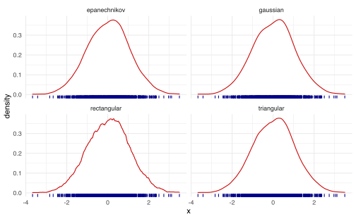
Recordemos nuevamente la fórmula
\[\begin{equation*} \hat{f}_{h}\left( x \right) = \frac{1}{nh}\sum_{i=1}^{n} K\left( \frac{x-X_{i}}{h} \right) \end{equation*}\]
Cada sumando de esta expresión es una función de la variable \(x\). Si la integramos se obtiene que
\[\begin{equation*} \frac{1}{nh}\int K\left( \frac{x-X_{i}}{h} \right) dx = \frac{1}{nh} \int K\left( u \right) h du = \frac{1}{n} \int K(u) du = \frac{1}{n} \end{equation*}\]
En el siguiente gráfico se generan 10 puntos aleatorios según una normal estándar (rojo) y se grafica cada uno de los 10 componentes del estimador de la densidad usando kernels gaussianos (azul). El estimador resultante aparece en color negro. Note que cada uno de los 10 componentes tiene la misma área bajo la curva, la cual en este caso es 0.1. 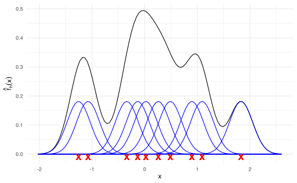
2.2.3 Propiedades Estadísticas
Al igual que en el caso de histograma, también aplica lo siguiente:
\[\begin{align*} \mathrm{MSE}(\hat{f}_{h}(x)) & =\mathrm{Var}(\hat{f}_{h}(x))+\mathrm{Sesgo}^{2} (\hat{f}_{h}(x)) \\ \mathrm{MISE}(\hat{f}_{h}) & =\int\mathrm{Var}(\hat{f}_{h}(x))dx+\int\mathrm{Sesgo}^{2}(\hat{f}_{h}(x))dx \end{align*}\]
donde
\(\mathrm{Var}\left(\hat{f}_{h}(x)\right)=\mathbb{E}\left[\hat{f}_{h}(x)-\mathbb{E}\hat{f}_{h}(x)\right]^{2}\) and \(\mathrm{Sesgo}\left(\hat{f}_{h}(x)\right)=\mathbb{E}\left[\hat{f}_{h}(x)\right]-f(x)\).
En el caso de la varianza:
\[\begin{align*} \mathrm{Var}(\hat{f}_{h}(x)) & =\mathrm{Var}\left(\frac{1}{n}\sum_{i=1}^{n}K\left(\frac{x-X_{i}}{h}\right)\right) \\ & =\frac{1}{n^{2}h^{2}}\sum_{i=1}^{n}\mathrm{Var}\left(K\left(\frac{x-X_{i}}{h}\right)\right) \\ & =\frac{1}{nh^{2}}\mathrm{Var}\left(K\left(\frac{x-X}{h}\right)\right) \\ & =\frac{1}{nh^{2}}\left\{ \textcolor{red}{\mathbb{E}\left[K^{2}\left(\frac{x-X}{h}\right)\right]} -\left\{ \textcolor{blue}{\mathbb{E}\left[K\left(\frac{x-X}{h}\right)\right]} \right\}^{2} \right\}. \end{align*}\] Usando que: \[\begin{align*} \textcolor{red}{\mathbb{E}\left[K^{2}\left(\frac{x-X}{h}\right)\right]} & =\int K^{2}\left(\frac{x-s}{h}\right)f(s)ds \\ & =h\int K^{2}\left(u\right)f(uh+x)du \\ & =h\int K^{2}\left(u\right)\left\{ f(x)+o(1)\right\} du \\ & =h\left\{ \Vert K\Vert_{2}^{2}f(x)+o(1)\right\} . \end{align*}\]
\[\begin{align*} \textcolor{blue}{\mathbb{E}\left[K\left(\frac{x-X}{h}\right)\right]} & =\int K\left(\frac{x-s}{h}\right)f(s)ds \\ & = h\int K\left(u\right)f(uh+x)du \\ & =h\int K\left(u\right)\left\{ f(x)+o(1)\right\} du \\ & =h\left\{f(x)+o(1)\right\} . \end{align*}\]
Por lo tanto se obtiene que
\[\begin{equation*} \mathrm{Var}\left(\hat{f}_{h}(x)\right) = \frac{1}{nh} \Vert K\Vert_{2}^{2}f(x) + o\left(\frac{1}{nh}\right), \text{ si } nh\to \infty. \end{equation*}\]
2.2.4 Sesgo
Para el sesgo tenemos
\[\begin{align*} \mathrm{Sesgo}\left(\hat{f}_{h}(x)\right) & = \mathbb{E}\left[\hat{f}_{h}(x)\right]-f(x) \\ & = \frac{1}{nh} \sum_{i=1}^{n} \mathrm{E}\left[K\left( \frac{x-X_{i}}{h} \right)\right] - f(x) \\ & = \frac{1}{h}\mathrm{E}\left[K\left( \frac{x-X_{1}}{h} \right)\right] - f(x) \\ & = \int \frac{1}{h} K\left( \frac{x-u}{h}\right)f(u)du -f(x) \\ \end{align*}\]
Ejercicio 2.5 Usando el cambio de variable \(s=\frac{u-x}{h}\) y las propiedades del kernel pruebe que
\[\begin{equation*} \mathrm{Sesgo}\left(\hat{f}_{h}(x)\right) = \frac{h^{2}}{2} f^{\prime\prime} \mu_{2}(K) + o(h^{2}), \text{ si } h\to 0 \end{equation*}\] donde \(\mu_{2}=\int s^{2}K(s)ds\).
Nota:. En algunas pruebas más formales, se necesita además que \(f^{\prime\prime}\) sea absolutamente continua y que \(\int(f^{\prime\prime\prime}(x))dx<\infty\).}
En el siguiente gráfico se ilustra el estimador no paramétrico de la distribución de tiempos entre erupciones en la muy conocida tabla de datos faithful. El estimador se calcula bajo dos distintas escogencias de ancho de banda.
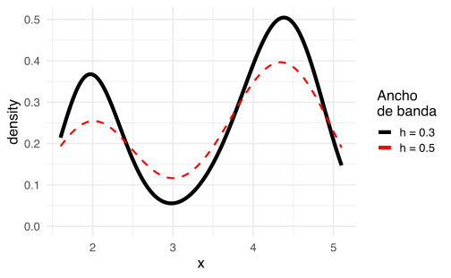
Nota:. Note como los cambios en el ancho de banda modifican la suavidad (sesgo) y el aplanamiento de la curva (varianza).
2.2.5 Error cuadrático medio y Error cuadrático medio integrado
El error cuadrático medio se escribe
\[\begin{align*} \mathrm{MSE}(\hat{f}_{h}(x)) & = \mathrm{Sesgo}\left(\hat{f}_{h}(x)\right)^{2} + \mathrm{Var}\left(\hat{f}_{h}(x)\right) \\ & = \frac{h^{4}}{4}\left(\mu_{2}(K)f^{\prime\prime}(x)\right)^{2}+\frac{1}{nh}\Vert K\Vert_{2}^{2}f(x)+o(h^{4})+o\left(\frac{1}{nh}\right). \end{align*}\]
Y el error cuadrático medio integrado se escribe como,
\[\begin{align*} \mathrm{MISE}\left(\hat{f}_{h}\right) & = \int \mathrm{MSE}\left(\hat{f}_{h}(x)\right)dx \\ & = \int \mathrm{Sesgo}\left(\hat{f}_{h}(x)\right)^{2} + \mathrm{Var}\left(\hat{f}_{h}(x)\right)dx \\ & = \frac{h^{4}}{4}\mu_{2}^{2}(K)\left\Vert f^{\prime\prime}(x)\right\Vert_{2}^{2} +\frac{1}{nh}\Vert K\Vert_{2}^{2}+o(h^{4})+o\left(\frac{1}{nh}\right). \end{align*}\]
Al igual que en el caso del histograma, el estimador por kernels es un estimador consistente de \(f\) si \(h\rightarrow 0\) y \(nh\rightarrow \infty\). Además el MISE depende directamente de \(f''\).
2.2.6 Ancho de banda óptimo
Minimizando el \(\mathrm{MISE}\) con respecto a \(h\) obtenemos
\[\begin{equation*} h_{opt}=\left(\frac{\Vert K\Vert_{2}^{2}}{\Vert f^{\prime\prime}\Vert_{2}^{2}\left(\mu_{2}(K)\right)^{2}n}\right)^{1/5}=O\left( n^{-1/5} \right). \end{equation*}\]
Nota:. De forma práctica, \(h_{opt}\) no es un estimador útil de \(h\) porque depende de \(\Vert f^{\prime\prime}\Vert_{2}^{2}\) que es desconocido. Más adelante veremos otra forma de encontrar este estimador.
Evaluando \(h_{opt}\) en el \(\mathrm{MISE}\) tenemos que
\[\begin{equation*} \mathrm{MISE}(\hat{f}_{h})=\frac{5}{4}\left(\Vert K\Vert_{2}^{2}\right)^{4/5}\left(\Vert f^{\prime\prime}\Vert_{2}^{2}\mu_{2}(K)\right)^{2/5}n^{-4/5} = O\left( n^{-4/5} \right). \end{equation*}\]
y por lo tanto la tasa de convergencia del MISE a 0 es más rápida que para el caso del histograma:
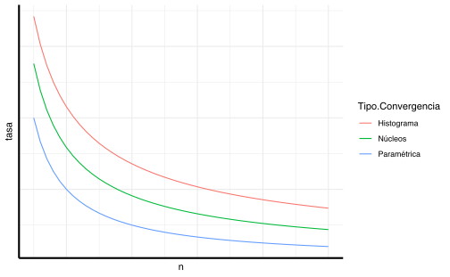
Nota:. Como se comentó anteriormente, el principal inconveniente del ancho de banda: \[\begin{equation*} h_{opt}=\left(\frac{\Vert K\Vert_{2}^{2}}{\Vert f^{\prime\prime}\Vert_{2}^{2}\left(\mu_{2}(K)\right)^{2}n}\right)^{1/5}=O\left( n^{-1/5} \right). \end{equation*}\] es que depende de \(f''\).
A continuación se explica dos posibles métodos para determinar para aproximar el ancho de banda óptimo:
2.2.6.1 Referencia normal
Nota:. Este método es más efectivo si se conoce que la verdadera distribución es bastante suave, unimodal y simétrica. Más adelante veremos otro método para densidades más generales.
Asuma que \(f\) es normal distribuida y se utiliza un kernel \(K\) gausiano. Entonces se tiene que
\[\begin{align*} \hat{h}_{rn} & =\left(\frac{\Vert K\Vert_{2}^{2}}{\Vert f^{\prime\prime}\Vert_{2}^{2}\left(\mu_{2}(K)\right)^{2}n}\right)^{1/5}=O\left( n^{-1/5} \right) \\ & =1.06 \hat{\sigma} n^{-1/5}. \end{align*}\]
donde
\[\begin{equation*} \hat{\sigma} = \sqrt{\frac{1}{n-1} \sum_{i=1}^{n} \left( x_{i}-\bar{x}^{2} \right)} \end{equation*}\]
Ejercicio 2.6 Pruebe que la ecuación anterior es verdadera. Utilice el hecho de que: \[\begin{align*} \Vert f^{\prime\prime}\Vert_{2}^{2}=\sigma^{-5}\int \phi^{\prime \prime}(x)^2 dx \end{align*}\] donde \(\phi\) es la función de densidad de una \(N(0,1)\).
Nota:. El principal inconveniente de \(\hat{h}_{rn}\) es su sensibilidad a los valores extremos:
Ejemplo 2.1 La varianza empírica de 1, 2, 3, 4, 5, es 2.5.
La varianza empírica de 1, 2, 3, 4, 5, 99, es 1538.
Para solucionar el problema anterior, se puede considerar una medida más robusta de variación, por ejemplo el rango intercuantil IQR:
\[\begin{equation*} \mathrm{IQR}^{X} = Q^{X}_{3} - Q^{X}_{1} \end{equation*}\] donde \(Q^{X}_{1}\) y \(Q^{X}_{3}\) son el primer y tercer cuartil de un conjunto de datos \(X_{1},\ldots, X_n\).
Con el supuesto que \(X\sim \mathcal{N}(\mu,\sigma^{2})\) entonces \(\displaystyle Z = \frac{X-\mu}{\sigma} \sim \mathcal{N}(0,1)\) y entonces:
\[\begin{align*} \mathrm{IQR} & = Q^{X}_{3} - Q^{X}_{1} \\ & = \left( \mu+\sigma Q^{Z}_{3} \right) - \left( \mu+\sigma Q^{Z}_{1} \right) \\ & = \sigma \left(Q^{Z}_{3} - Q^{Z}_{1} \right) \\ & \approx \sigma \left( 0.67 - (-0.67) \right) \\ & =1.34 \sigma. \end{align*}\]
Por lo tanto \(\displaystyle \hat{\sigma} = \frac{\widehat{\mathrm{IQR}}^{X}}{1.34}\)
Podemos sustituir la varianza empírica de la fórmula inicial y tenemos \[\begin{equation*} \hat{h}_{rn} = 1.06 \frac{\widehat{\mathrm{IQR}}^{X}}{1.34} n^{-\frac{1}{5}} \approx 0.79\ \widehat{\mathrm{IQR}}^{X}\ n^{-\frac{1}{5}} \end{equation*}\]
Combinando ambos estimadores, podemos obtener,
\[\begin{equation*} \hat{h}_{rn} = 1.06 \min \left\{\frac{\widehat{\mathrm{IQR}}^{X}}{1.34}, \hat{\sigma }\right\} n^{-\frac{1}{5}} \end{equation*}\]
pero esta aproximación es conveniente bajo el escenario de que la densidad \(f\) sea similar a una densidad normal.
2.2.6.2 Validación Cruzada
Defina el error cuadrático integrado como \[\begin{align*} \mathrm{ISE}(\hat{f}_{h}) & =\int\left(\hat{f}_{h}(x)-f(x)\right)^{2}dx\nonumber \\ & =\int \hat{f}_{h}^{2}(x)dx-2\int \hat{f}_{h}(x)f(x)dx+\int f^{2}(x)dx. \end{align*}\]
Nota:. El MISE es el valor esperado del ISE.
Nuestro objetivo es minimizar el ISE con respecto a \(h\).
Primero note que \(\int f^{2}(x)dx\) NO DEPENDE de \(h\). Podemos minimizar la expresión \[\begin{equation*} \mathrm{ISE}(\hat{f}_{h})-\int f^{2}(x)dx= \textcolor{red}{\int\hat{f}_{h}^{2}(x)dx} -2 \textcolor{blue}{\int\hat{f}_{h}(x)f(x)dx} \end{equation*}\]
Vamos a resolver esto en dos pasos partes
Integral \(\textcolor{blue}{\int\hat{f}_{h}(x)f(x)dx}\)
Integral \(\textcolor{blue}{\int\hat{f}_{h}(x)f(x)dx}\)
El término \(\textcolor{blue}{\int\hat{f}_{h}(x)f(x)dx}\) es el valor esperado de \(\mathrm{E}\left[\hat{f}_h(X)\right]\). Su estimador empírico sería: \[\begin{equation*} \widehat{\mathrm{E}\left[\hat{f}_h(X)\right]} = \frac{1}{n}\sum_{i=1}^{n}\hat{f}_{h}(X_{i}) =\frac{1}{n^{2}h}\sum_{i=1}^{n}\sum_{j=1}^{n} K\left(\frac{X_{j}-X_{i}}{h}\right). \end{equation*}\]
Nota:. El problema con esta expresión es que las observaciones que se usan para estimar la esperanza son las mismas que se usan para estimar \(\hat{f}_{h}(x)\) (Se utilizan doble).
La solución es remover la \(i^{\text{ésima}}\) observación de \(\hat{f}_{h}\) para cada \(i\).
Redefiniendo el estimador anterior tenemos una estimación de \(\int \hat{f}_{h}(x)f(x)dx\) a través de: \[ \frac{1}{n}\sum_{i=1}^{n}\hat{f}_{h,-i}(X_{i}), \] donde (estimador leave-one-out) \[ \hat{f}_{h,-i}(x)=\frac{1}{(n-1)h}\sum_{\substack{j=1\\ j\neq i}}^{n}K\left( \frac{x-X_{j}}{h} \right) . \]
de esta forma nos aseguramos que las observaciones que se usan para calcular \(\hat{f}_{h,-i}(x)\) son independientes de la observación que uno usa para definir el estimador de \(E[\hat f_h(x)]\).
Siguiendo con el término \(\textcolor{red}{\int\hat{f}_{h}^{2}(x)dx}\) note que este se puede reescribir como
\[\begin{align*} \textcolor{red}{\int\hat{f}_{h}^{2}(x)dx} & =\int\left(\frac{1}{nh}\sum_{i=1}^{n}K\left( \frac{x-X_{i}}{h} \right)\right)^{2}dx \\ & =\frac{1}{n^{2}h^{2}}\sum_{i=1}^{n}\sum_{i=1}^{n}\int K\left(\frac{x-X_{i}}{h}\right)K\left(\frac{x-X_{j}}{h}\right)dx \\ & =\frac{1}{n^{2}h}\sum_{i=1}^{n}\sum_{i=1}^{n}\int K\left(u\right)K\left(\frac{X_{i}-X_{j}}{h}-u\right)du \\ & =\frac{1}{n^{2}h}\sum_{i=1}^{n}\sum_{i=1}^{n}K*K\left(\frac{X_{i}-X_{j}}{h}\right). \end{align*}\]
donde \(K*K\) es la convolución de \(K\) consigo misma.
Finalmente tenemos la función,
Finalmente definimos la función objetivo del criterio de validación cruzada como:
\[ \mathrm{CV}(h)=\frac{1}{n^{2}h}\sum_{i=1}^{n}\sum_{j=1}^{n}K*K\left(\frac{X_{i}-X_{j}}{h}\right)-\frac{2}{n(n-1)h}\sum_{i=1}^{n}\mathop{\sum_{j=1}^{n}}_{j\neq i}K\left( \frac{X_{i}-X_{j}}{h} \right). \]
Nota:. Note que \(\mathrm{CV}(h)\) no depende de \(f\) o sus derivadas y además la función objetivo se adapta automáticamente a las características de la densidad \(f\).
2.2.7 Intervalos de confianza para estimadores de densidad no paramétricos
Usando los resultados anteriores y asumiendo que \(h=cn^{-\frac{1}{5}}\) entonces
\[\begin{equation*} n^{\frac{2}{5}} \left\{ \hat{f}_{h}(x) -f(x)\right\} \xrightarrow{\mathcal{L}} \mathcal{N}\left(\underbrace{\frac{c^{2}}{2} f^{\prime\prime} \mu_{2}(K)}_{b_{x}}, \underbrace{\frac{1}{c}f(x) \left\Vert K \right\Vert_{2}^{2}}_{v_{x}}\right). \end{equation*}\]
Si \(z_{1-\frac{\alpha}{2}}\) es el cuantil \(1-\frac{\alpha}{2}\) de una distribución normal estándar, entonces
\[\begin{align*} 1-\alpha & \approx \mathbb{P}\left(b_{x}-z_{1-\frac{\alpha}{2}} v_{x} \leq n^{2 / 5}\left\{\widehat{f}_{h}(x)-f(x)\right\} \leq b_{x}+z_{1-\frac{\alpha}{2}} v_{x}\right) \\ & =\mathbb{P}\left(\widehat{f}_{h}(x)-n^{-2 / 5}\left\{b_{x}+z_{1-\frac{\alpha}{2}} v_{x}\right\}\right. \\ & \qquad\qquad \left. \leq f(x)\leq \hat{f}_{h}(x)-n^{-2 / 5}\left\{b_{x}-z_{1-\frac{\alpha}{2}} v_{x}\right\}\right) \end{align*}\]
Esta expresión nos dice que con una probabilidad de \(1-\alpha\) se tiene que
\[\begin{equation*} \begin{aligned} & \left[\hat{f}_{h}(x)-\frac{h^{2}}{2} f^{\prime \prime}(x) \mu_{2}(K)-z_{1-\frac{\alpha}{2}} \sqrt{\frac{f(x)\|K\|_{2}^{2}}{n h}}\right. \\ & \left.\widehat{f}_{h}(x)-\frac{h^{2}}{2} f^{\prime \prime}(x) \mu_{2}(K)+z_{1-\frac{a}{2}} \sqrt{\frac{f(x)\|K\|_{2}^{2}}{n h}}\right] \end{aligned} \end{equation*}\]
Al igual que en los casos anteriores, este invtervalo no es útil ya que depende de \(f(x)\) y \(f^{\prime\prime} (x)\).
Si \(h\) es pequeño relativamente a \(n^{-\frac{1}{5}}\) entonces el segundo término \(\frac{h^{2}}{2} f^{\prime \prime}(x) \mu_{2}(K)\) podría ser ignorado.
Si \(h\) es pequeño relativamente a \(n^{-\frac{1}{5}}\) entonces el segundo término \(\frac{h^{2}}{2} f^{\prime \prime}(x) \mu_{2}(K)\) podría ser ignorado.
Podemos reemplazar \(f(x)\) por su estimador \(\hat{f}_{h}(x)\). Entonces tendríamos una intervalo aplicable a nuestro caso:
\[\begin{equation*} \left[\hat{f_{h}}(x)-z_{1-\frac{\alpha}{2}} \sqrt{\frac{\hat{f_{h}}(x)\|K\|_{2}^{2}}{n h}}, \hat{f}_{h}(x)+z_{1-\frac{\alpha}{2}} \sqrt{\frac{\hat{f}_{h}(x)\|\mathrm{K}\|_{2}^{2}}{n h}}\right] \end{equation*}\]
Nota:. Este intervalo de confianza está definido para \(x\) fijo y no permite hacer inferencia sobre toda la función \(f\). Una forma de determinar la banda de confianza de toda la función \(f\) es a través de la fórmula 3.52 en la página 62 de (Härdle et al. 2004).
2.3 Laboratorio
Comenzaremos con una librería bastante básica llamada .
2.3.1 Efecto de distintos Kernels en la estimación
x <- read.csv("data/stockres.txt")
x <- unlist(x)summary(x)## Min. 1st Qu. Median Mean 3rd Qu. Max.
## -0.6118200 -0.0204085 -0.0010632 -0.0004988 0.0215999 0.1432286library(KernSmooth)
fhat_normal <- bkde(x, kernel = "normal", bandwidth = 0.05)
plot(fhat_normal, type = "l")
fhat_unif <- bkde(x, kernel = "box", bandwidth = 0.05)
plot(fhat_unif, type = "l")fhat_epanech <- bkde(x, kernel = "epanech", bandwidth = 0.05)
plot(fhat_epanech, type = "l")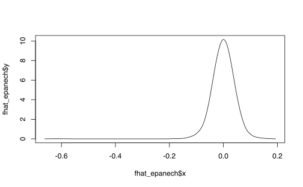
fhat_biweight <- bkde(x, kernel = "biweight", bandwidth = 0.05)
plot(fhat_biweight, type = "l")fhat_triweight <- bkde(x, kernel = "triweight", bandwidth = 0.05)
plot(fhat_triweight, type = "l")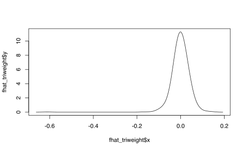
2.3.2 Efecto del ancho de banda en la estimación
** Kernel uniforme **
fhat <- bkde(x, kernel = "box", bandwidth = 0.001)
plot(fhat, type = "l")fhat <- bkde(x, kernel = "box", bandwidth = 0.5)
plot(fhat, type = "l")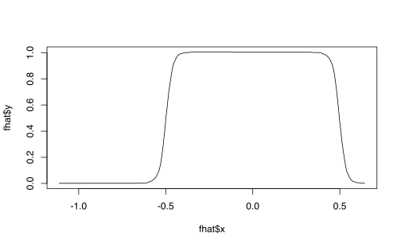
** Kernel Epanechnikov **
fhat <- bkde(x, kernel = "epa", bandwidth = 0.001)
plot(fhat, type = "l")fhat <- bkde(x, kernel = "epa", bandwidth = 0.5)
plot(fhat, type = "l")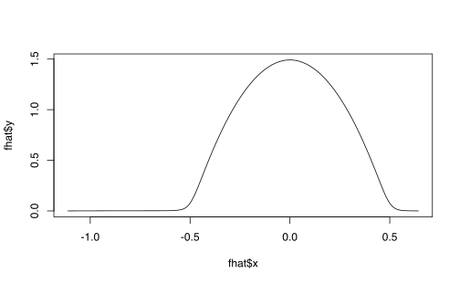
suppressMessages(library(tidyverse))
library(gganimate)
fani <- tibble()
for (b in seq(0.001, 0.02, length.out = 40)) {
f <- bkde(x, kernel = "epa", bandwidth = b, gridsize = length(x))
fani <- fani %>%
bind_rows(tibble(xreal = sort(x), x = f$x,
y = f$y, bw = b))
}
ggplot(data = fani) + geom_line(aes(x, y), color = "blue") +
labs(title = paste0("Ancho de banda = {closest_state}")) +
transition_states(bw) + view_follow() + theme_minimal(base_size = 20)## NULL# anim_save('manual_figure/bandwidth-animation.gif')- Nota:.
- Construya una variable llamada
uque sea una secuencia de -0.15 a 0.15 con un paso de 0.01 - Asigne
xa los datosstockrely calcule su media y varianza. - Usando la función
dnormconstruya los valores de la distribución de los datos usando la media y varianza calculada anteriormente. Asigne a esta variablef\_param. - Defina un ancho de banda
hen 0.02 - Construya un histograma para estos datos con ancho de banda
h. Llame a esta variablef\_hist - Usando el paquete
KernSmoothy la funciónbkde, construya una función que calcule el estimador no paramétrico con un núcleo Epanechivok para un ancho de banda \(h\). Llame a esta variablef\_epa. - Dibuje en el mismo gráfico la estimación paramétrica y no paramétrica.
x <- read.csv("data/stockres.txt")
x <- unlist(x)
# Eliminar nombres de las columnas
names(x) <- NULL
u <- seq(-0.15, 0.15, by = 0.01)
mu <- mean(x)
sigma <- sd(x)
f_param <- dnorm(u, mean = mu, sd = sigma)
h <- 0.02
n_bins <- floor(diff(range(x))/h)
f_hist <- hist(x, breaks = n_bins)f_epa <- as.data.frame(bkde(x, kernel = "epa", bandwidth = h))
x_df <- data.frame(x)
library(ggplot2)
ggplot(x_df, aes(x)) + geom_histogram(aes(y = ..density..),
binwidth = 0.02, col = "black", fill = "white") +
stat_function(fun = dnorm, args = list(mean = mu,
sd = sigma), color = "red") + geom_line(data = f_epa,
aes(x, y), color = "blue") + theme_minimal(base_size = 20)2.3.3 Ancho de banda óptimo
Usemos la regla de la normal o también conocida como Silverman. Primero recuerde que en este caso se asume que \(f(x)\) sigue una distribución normal. En este caso, lo que se obtiene es que
\[\begin{align*} \Vert f^{\prime \prime} \Vert_2^2 & = \sigma ^{-5} \int \{\phi^{\prime \prime}\}^2 dx \\ & = \sigma ^{-5} \frac{3}{8\sqrt{\pi}} \approx 0.212 \sigma^{-5} \end{align*}\]
donde \(\phi\) es la densidad de una normal estándar.
El estimador para \(\sigma\) es
\[ s = \sqrt{\frac{1}{n-1} \sum_{i=1}^n (x_i - \bar{x})^2 }. \]
Y usando el cálculo realizado anteriormente, se obtiene que
\[ h_{normal} = \left( \frac{4 s^5}{3n} \right)^{1/5} \approx 1.06 s n^{-1/5}. \]
Un estimador más robusto es
\[ h_{normal} = 1.06 \min \left\{ s , \frac{IQR}{1.34} \right\} n^{-1/5}. \]
¿Por qué es \(IQR / 1.34\)?
s <- sd(x)
n <- length(x)h_normal <- 1.06 * s * n^(-1/5)
h <- h_normal
n_bins <- floor(diff(range(x))/h)
f_hist <- hist(x, breaks = n_bins, plot = FALSE)
f_epa <- as.data.frame(bkde(x, kernel = "epa", bandwidth = h))
ggplot(x_df, aes(x)) + geom_histogram(aes(y = ..density..),
binwidth = h, col = "black", fill = "white") +
stat_function(fun = dnorm, args = list(mean = mu,
sd = sigma), color = "red") + geom_line(data = f_epa,
aes(x, y), color = "blue") + theme_minimal(base_size = 20)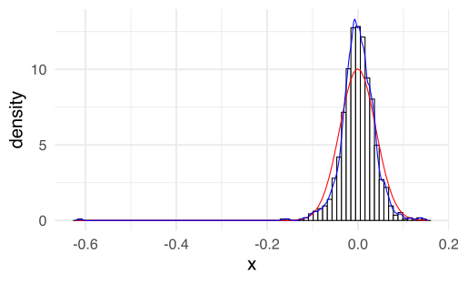
h_iqr <- 1.06 * min(s, IQR(x)/1.34) * n^(-1/5)
h <- h_iqr
n_bins <- floor(diff(range(x))/h)
f_hist <- hist(x, breaks = n_bins, plot = FALSE)
f_epa <- as.data.frame(bkde(x, kernel = "epa", bandwidth = h))
ggplot(x_df, aes(x)) + geom_histogram(aes(y = ..density..),
binwidth = h, col = "black", fill = "white") +
stat_function(fun = dnorm, args = list(mean = mu,
sd = sigma), color = "red") + geom_line(data = f_epa,
aes(x, y), color = "blue") + theme_minimal(base_size = 20)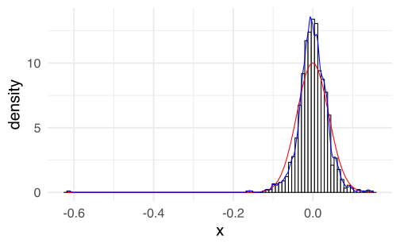
Una librería más especializada es (non-parametric).
library(np)
x.eval <- seq(-0.2, 0.2, length.out = 200)
h_normal_np <- npudensbw(dat = x, bwmethod = "normal-reference")
dens.ksum <- npksum(txdat = x, exdat = x.eval, bws = h_normal_np$bw)$ksum/(n *
h_normal_np$bw[1])
dens.ksum.df <- data.frame(x = x.eval, y = dens.ksum)
ggplot(x_df, aes(x)) + geom_histogram(aes(y = ..density..),
binwidth = h_normal_np$bw, col = "black", fill = "white") +
stat_function(fun = dnorm, args = list(mean = mu,
sd = sigma), color = "red") + geom_line(data = dens.ksum.df,
aes(x, y), color = "blue") + theme_minimal(base_size = 20)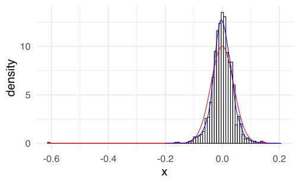
2.3.4 Validación cruzada
La forma que vimos en clase es la de validación cruzada por mínimos cuadrados``least-square cross validation’’ la cual se puede ejecutar con este comando.
h_cv_np_ls <- npudensbw(dat = x, bwmethod = "cv.ls",
ckertype = "epa", ckerorder = 2)##
Multistart 1 of 1 |
Multistart 1 of 1 |
Multistart 1 of 1 |
Multistart 1 of 1 /
Multistart 1 of 1 |
Multistart 1 of 1 |
dens.np <- npudens(h_cv_np_ls)
plot(dens.np, type = "b")dens.np.df <- data.frame(x = dens.np$eval[, 1], y = dens.np$dens)
ggplot(x_df, aes(x)) + geom_histogram(aes(y = ..density..),
binwidth = h_cv_np_ls$bw, col = "black", fill = "white") +
stat_function(fun = dnorm, args = list(mean = mu,
sd = sigma), color = "red") + geom_line(data = dens.np.df,
aes(x, y), color = "blue") + theme_minimal(base_size = 20)2.3.5 Temas adicionales
** Reducción del sesgo ** Como lo mencionamos en el texto, una forma de mejorar el sesgo en la estimación es suponer que la función de densidad es más veces diferenciable.
Esto se logra asumiendo que el Kernel es más veces diferenciable.
h_cv_np_ls <- npudensbw(dat = x, bwmethod = "cv.ls",
ckertype = "epa", ckerorder = 4)##
Multistart 1 of 1 |
Multistart 1 of 1 |
Multistart 1 of 1 |
Multistart 1 of 1 /
Multistart 1 of 1 |
Multistart 1 of 1 |
dens.np <- npudens(h_cv_np_ls)
plot(dens.np, type = "b", lwd = 2)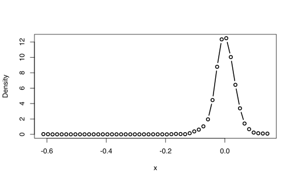
dens.np.df <- data.frame(x = dens.np$eval[, 1], y = dens.np$dens)
ggplot(x_df, aes(x)) + geom_histogram(aes(y = ..density..),
binwidth = h_cv_np_ls$bw, col = "black", fill = "white") +
stat_function(fun = dnorm, args = list(mean = mu,
sd = sigma), color = "red") + geom_line(data = dens.np.df,
aes(x, y), color = "blue") + theme_minimal(base_size = 20)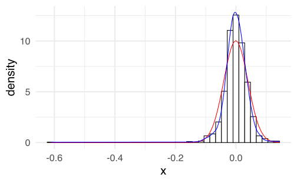
Otra forma de estimar el ancho de banda Otra forma de estimar ancho de bandas óptimos es usando máxima verosimilitud. Les dejo de tarea revisar la sección 1.1 del artículo de (Hall 1987) para entender su estructura.
h_cv_np_ml <- npudensbw(dat = x, bwmethod = "cv.ml",
ckertype = "epanechnikov")##
Multistart 1 of 1 |
Multistart 1 of 1 |
Multistart 1 of 1 |
Multistart 1 of 1 /
Multistart 1 of 1 |
Multistart 1 of 1 |
dens.np <- npudens(h_cv_np_ml)
plot(dens.np, type = "b")dens.np.df <- data.frame(x = dens.np$eval[, 1], y = dens.np$dens)
ggplot(x_df, aes(x)) + geom_histogram(aes(y = ..density..),
binwidth = h_cv_np_ml$bw, col = "black", fill = "white") +
stat_function(fun = dnorm, args = list(mean = mu,
sd = sigma), color = "red") + geom_line(data = dens.np.df,
aes(x, y), color = "blue") + theme_minimal(base_size = 20)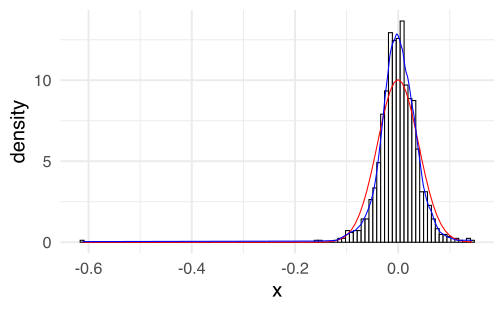
h_cv_np_ml <- npudensbw(dat = x, bwmethod = "cv.ml",
ckertype = "epanechnikov", ckerorder = 4)##
Multistart 1 of 1 |
Multistart 1 of 1 |
Multistart 1 of 1 |
Multistart 1 of 1 /
Multistart 1 of 1 |
Multistart 1 of 1 |
dens.np <- npudens(h_cv_np_ml)
plot(dens.np, type = "b")dens.np.df <- data.frame(x = dens.np$eval[, 1], y = dens.np$dens)
ggplot(x_df, aes(x)) + geom_histogram(aes(y = ..density..),
binwidth = h_cv_np_ml$bw, col = "black", fill = "white") +
stat_function(fun = dnorm, args = list(mean = mu,
sd = sigma), color = "red") + geom_line(data = dens.np.df,
aes(x, y), color = "blue") + theme_minimal(base_size = 20)fani <- tibble()
for (b in seq(0.001, 0.05, length.out = 40)) {
f <- npudens(tdat = x, ckertype = "epanechnikov",
bandwidth.compute = FALSE, bws = b)
fani <- fani %>%
bind_rows(tibble(xreal = sort(x), x = f$eval$x,
y = f$dens, bw = b))
}
ggplot(data = fani) + geom_line(aes(x, y), color = "blue") +
labs(title = paste0("Ancho de banda = {closest_state}")) +
theme_minimal(base_size = 20) + transition_states(bw) +
view_follow()## NULL# anim_save('manual_figure/bandwidth-animation-np.gif')Ejercicio 2.7 Implementar el intervalo confianza visto en clase para estimadores de densidades por núcleos y visualizarlo de en ggplot.
Si se atreven: ¿Se podría hacer una versión animada de ese gráfico para visualizar el significado real de este el intervalo de confianza?